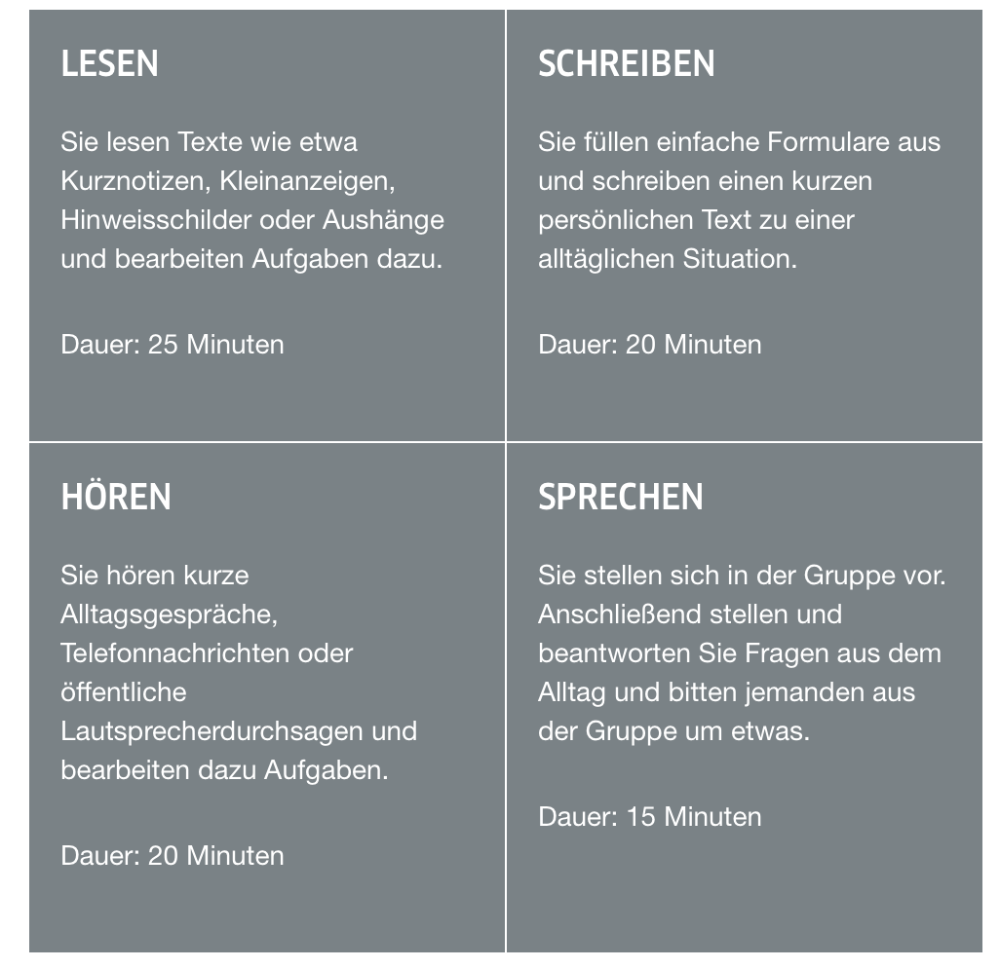

Done by Oliver W.
Content
- The German Alphabet (on separate webpage)
- German Nummern (Numbers) (on separate webpage)
- German Language 101
- German Grammar 101
- A1 Preparation
A1 Preparation

According to the official Goethe Institute webpage which creates and determines the A1-C2 German language examinations, of which A1 consists of 4 parts as depicted in the above picture.
They are as follows (including the short official description):
- Hören (Hearing)
- Sie hören kurze Alltagsgespräche, Telefonnachrichten oder öffentliche Lautsprecherdurchsagen und bearbeiten dazu Aufgaben. Dauer: 20min
- You listen to every-day conversations, telephone messages or public announcements and answer questions about them. Duration: 20min
- Lesen (Reading)
- Sie lesen Texte wie etwa Kurznotizen, Kleinanzeigen, Hinweisschilder oder Aushänge und bearbeiten Aufgaben dazu. Dauer: 25min
- You read texts like short notes, classifieds, notices or announcements and answer questions about them. Duration: 25min
- Schreiben (Writing)
- Sie füllen einfache Formulare aus und schreiben einen kurzen persönlichen Text zu einer alltäglichen Situation. Dauer: 20min
- You fill out easy form sheets and write a short personal text about a familiar every-day situation. Duration: 20min
- Sprechen (Speaking)
- Sie stellen sich in der Gruppe vor. Anschließend stellen und beantworten Sie Fragen aus dem Alltag und bitten jemanden aus der Gruppe um etwas. Dauer: 15min
- You introduce yourself in the group. After that you ask and answer questions about your daily life and ask someone in the group for something. Duration: 15min